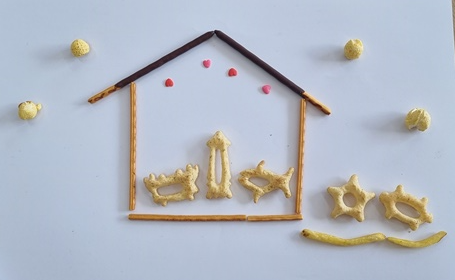
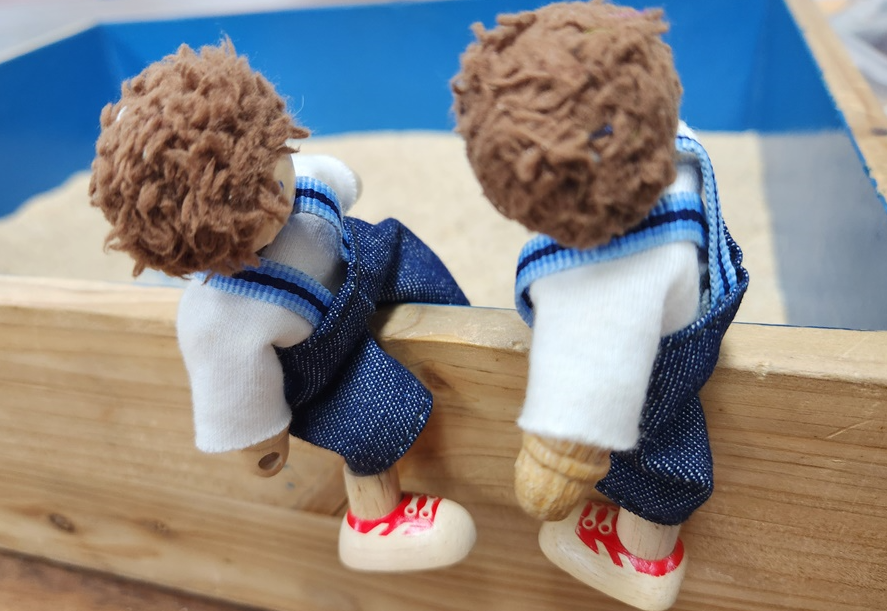

1. 초등 5학년 신체발달, 인지발달, 정서발달의 의의
초등학교 5학년은 아동기 후반에 해당하는 시기로, 신체적 성장과 인지적 발달, 정서 및 사회적 능력이 본격적으로 통합되는 중요한 시기이다. 이 시기의 아동은 만 10세 전후로, 추상적 사고의 초기 능력이 발달하면서 학습 내용의 복잡성과 깊이에 대한 이해가 가능해지고, 타인의 관점을 인식하고 조망하는 능력이 점차 향상된다. 또한 또래 관계의 중요성이 증가하면서 사회적 소속감과 우정, 협동, 공감 능력 등의 사회적 기술이 활발히 발달한다.
정서적으로는 자아 개념과 자존감 형성이 보다 뚜렷해지고, 학업 성취나 또래 평가, 교사와의 관계를 통해 자기 가치에 대한 인식이 형성된다. 이 시기 아동은 자율성과 책임감을 요구받는 다양한 과업에 직면하면서, 자기 조절 능력, 감정 표현 및 관리 능력을 배워가며 성숙해진다.
초등학교 5학년은 아동이 유아기적 의존성에서 벗어나 청소년기의 전 단계로 진입하기 위한 준비 과정으로서, 신체, 인지, 정서, 사회성 등 발달 전 영역에서 균형 잡힌 성장이 요구되는 시기이다. 따라서 이 시기의 교육과 지도는 단순한 지식 전달을 넘어, 자율적 사고, 감정 조절, 책임감 있는 행동을 촉진하는 통합적 접근이 필요하다.
2. 초등5학년 신체 발달의 특징
1) 성장 속도의 가속화
초등 5학년 무렵부터 아동은 사춘기로의 진입 전단계에 해당하며, 일부 아동은 급격한 키 성장과 체중 증가가 관찰된다. 이는 성호르몬의 분비가 서서히 증가하기 시작함을 의미한다. 특히 이 시기의 성장은 아동 간 개인차가 크며, 키 성장 외에도 피부 변화나 냄새, 땀 분비량 증가 등 생리적 변화가 동반될 수 있어 민감한 반응을 유발할 수 있다.
2) 성적 2차 성징의 시작
성적 2차 성징으로 여아는 가슴 몽우리가 잡히고, 음모가 나기 시작하며, 체형 변화가 두드러지고, 남아도 고환의 크기 변화나 피지 분비 증가 등이 나타날 수 있다. 이 과정에서 신체에 대한 수치심이나 불안을 경험할 수 있으며, 성교육과 위생지도가 병행되어야 한다. 또한, 또래 간 신체 발달 속도 차이로 인해 열등감이나 과도한 자의식이 형성되기도 한다.
3) 운동 능력의 향상
초등5학년 아동은 협응력, 지구력, 민첩성 등이 전반적으로 발달하며, 다양한 스포츠 활동이나 예술 활동에서 자신감을 가지기 시작한다. 특히 신체 활동은 스트레스 해소뿐만 아니라 자아존중감 형성에도 긍정적 영향을 미친다. 반면, 운동 능력의 개인차가 또래 관계나 비교의 원인이 되기도 하므로 긍정적 강화와 개별 지도가 필요하다.
4) 신체 이미지에 대한 관심 증가
이 시기는 또래와의 비교를 통해 자신의 외모나 체형에 대해 관심을 갖기 시작하며, 옷차림, 헤어스타일, 체중에 대한 자기 인식이 높아진다. 특히 SNS나 대중매체의 영향으로 외모에 대한 사회적 기준을 내면화하는 경향이 강해질 수 있다. 이에 따라 외모로 자신을 평가하거나 열등감을 느끼는 일이 잦아질 수 있으며, 긍정적 자기 이미지 형성을 위한 성인지 감수성과 감정 코칭이 필요하다.

2. 초등5학년 인지 발달의 특징
1) 구체적 조작기 후반기
피아제의 인지발달 이론에 따르면 초등 5학년은 ‘구체적 조작기’에서 ‘형식적 조작기’로 이행하는 과도기이며, 보다 논리적이고 체계적인 사고가 가능해진다. 예를 들어 ‘만약 ~라면’과 같은 가설적 사고를 시도하고, 수학적 사고에서도 다단계 연산이나 비율 개념에 대한 이해가 생기기 시작한다. 그러나 여전히 구체적인 경험이나 시각 자료에 의존하는 특성도 강하다.
2) 문제 해결 능력 향상
초등5학년은 문제해결에서 이전보다 한층 복잡한 상황에 대한 분석과 해결 전략이 가능해지며, 순차적 추론이나 인과관계 이해 능력이 강화된다. 독립적인 학습 활동, 과학 실험, 토론 과제 등을 통해 스스로 문제를 정의하고 다양한 해결책을 탐색하는 능력이 뚜렷해진다. 또한 실패를 통한 학습의 개념을 받아들이기 시작하며 자기 평가와 피드백을 학습의 일부로 인식하는 능력이 발달한다.
3) 메타인지의 출현
초등 5학년은 자신의 사고 과정을 의식하고 점검하는 능력인 메타인지(meta)는 학습 전략을 스스로 선택하거나 조절할 수 있는 토대가 된다. 예를 들어 "이건 어렵지만 반복하면 될 것 같아"와 같이 자기 조절적 사고가 발달하며, 학습 계획을 세우거나 자기평가를 시도하는 경향이 보인다. 이는 자신의 인지 과정에 한 차원 높은 관점에서 관찰, 발견, 통제하는 정신 작용으로써 학습 동기와 성취감에도 밀접한 영향을 미친다.
4) 학습 흥미의 개인차
5학년이 되면 아동은 교과 간 선호도를 명확히 인식하고, 자신이 좋아하거나 잘하는 분야에 집중하려는 경향이 나타난다. 예술, 과학, 언어 등 특정 영역에 대한 흥미가 강해지며, 이는 진로 탐색의 초기 동기로 작용할 수 있다. 반면, 흥미가 낮은 과목에 대해 회피적 태도를 보일 수 있어 교사의 흥미 유발 전략이 중요하다.

3. 초등5학년 정서 발달의 특징
1) 자아개념의 확립 시도
초등 5학년은 자신에 대한 인식이 비교적 구체화되고, "나는 착하다", "나는 공부를 잘 못한다"와 같은 특성 중심의 자아개념이 형성된다. 이 자아개념은 또래나 성인으로부터 받은 평가에 큰 영향을 받으며, 자기 효능감이나 행동 방향을 결정하는 핵심 요인이 된다. 자아개념이 부정적으로 고착될 경우 위축, 회피 행동이 증가할 수 있다.
2) 자존감의 민감성
초등 5학년은 자기 존중감은 주로 성취 경험, 또래 관계, 교사나 부모의 인정 여부에 따라 형성된다. 특히 초등 5학년의 아동은 실패에 매우 민감하게 반응하며, 사소한 실수도 자기 전반에 대한 부정적 평가로 이어질 수 있다. 자존감을 보호하려는 방어 기제로 거짓말, 부정행동, 비교 회피 행동이 나타날 수 있으므로 긍정 피드백과 개별화 격려가 중요하다.
3) 복잡한 감정 표현
초등 5학년은 ‘기쁘다’, ‘슬프다’ 같은 기본 정서 외에도 ‘억울함’, ‘질투’, ‘창피함’, ‘배신감’ 등 복합 정서 경험이 증가한다. 이 시김는 타인의 감정에도 공감하기 시작한다. 감정 어휘가 확장되며, 내면의 감정을 글, 그림, 몸짓 등 다양한 방식으로 표현하는 역량이 발달한다. 이 시기의 감정 표현은 사회적 기술이나 또래 갈등 해결에도 중요한 역할을 한다.
4) 정서 조절 능력 발달
초등 5학년은 자신의 감정을 알아차리고 충동을 조절하는 능력이 향상되지만, 아직도 강한 분노나 실망감 앞에서는 감정 통제가 어려운 경우가 많다. 특히 가정 내 스트레스나 학교에서의 갈등은 감정 폭발로 이어질 수 있다. 따라서 일상 속 정서 코칭, 감정 일기 쓰기, 이완 훈련 등 감정 조절 기법을 반복적으로 익히는 것이 중요하다.
참고문헌
정옥분 (2021). 「아동발달의 이해」. 서울: 학지사.
이현주, 강은주 (2019). 「학교상담과 생활지도」. 서울: 창지사.
2024.07.21 - [상담] - 초등 6학년 갈팡질팡 심리적 특징과 학교에서 사회적 관계
초등 6학년 갈팡질팡 심리적 특징과 학교에서 사회적 관계
초등학교 6학년 남자 아동들은 사춘기의 문턱에 서 있으며, 이 시기에는 다양한 심리적, 사회적 변화가 나타납니다. 이 나이의 아동들은 특히 신체적 성장, 정서적 독립, 그리고 사회적 관계의
think-sis.co.kr
2024.04.08 - [상담] - 초등 6학년 아동기 - 신체적, 사회적, 정서적 특성
초등 6학년 아동기 - 신체적, 사회적, 정서적 특성
초등학교 6학년 아동은 대체로 11~12세에 해당하는데, 이 시기는 신체적, 사회적, 정서적으로 급격한 변화가 일어나는 시기이다. 이 단계의 아동은 학교생활과 또래 관계에서 다양한 도전과 기회
think-sis.co.kr